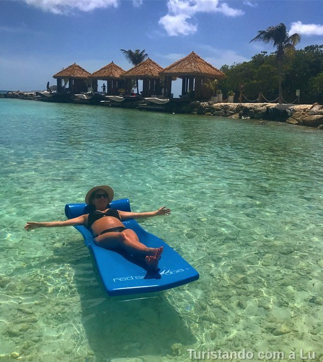
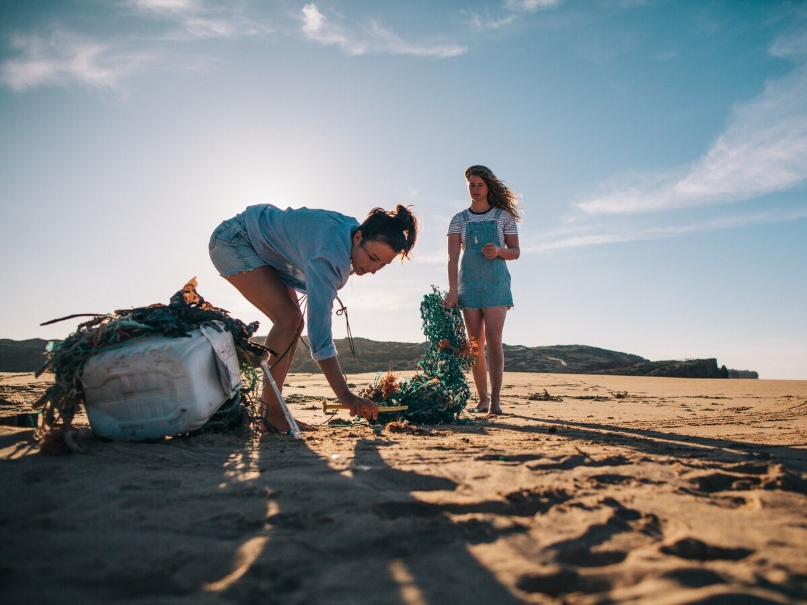

Inspiração de destinos
Navegue por nossas seções dedicadas a diferentes regiões do mundo e descubra destinos fascinantes. De praias paradisíacas a cidades históricas, temos opções para todos os gostos e estilos de viagem.
Guias completos
Encontre guias detalhados sobre destinos populares, incluindo informações sobre atrações imperdíveis, melhores épocas para visitar, dicas de transporte e sugestões de hospedagem. Queremos garantir que você tenha todas as informações necessárias para aproveitar ao máximo sua viagem.
Experiências autênticas
Descubra experiências únicas e autênticas em cada destino. Desde passeios gastronômicos a aulas de culinária local, trilhas em paisagens deslumbrantes, mergulhos em recifes de coral ou visitas a mercados tradicionais, há algo para todos os tipos de viajantes aventureiros.
Comunidade de viajantes

Faça parte de nossa comunidade de viajantes apaixonados. Compartilhe suas próprias experiências, dê dicas valiosas e conecte-se com outros exploradores do mundo. Juntos, podemos criar uma rede de apoio e inspiração para tornar cada viagem memorável.